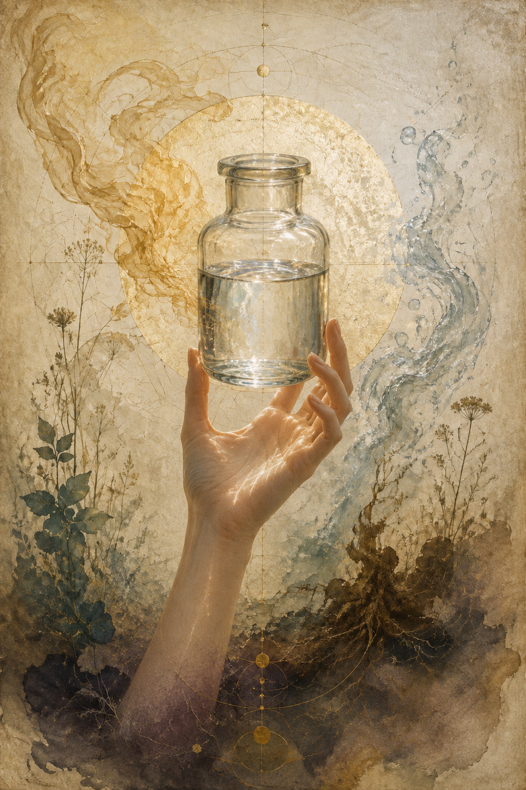
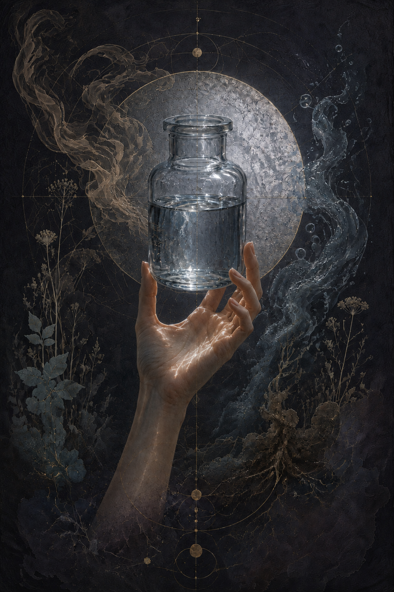

The Living Archive · Chapter V
The Jar Heldto the Light
The body knewbefore the archive did.


The first recognition
The Clear Water
The clear water came through first.
Not clear in the ordinary way. Not the flat clarity of bottled water or the blank neutrality of a machine doing what it was designed to do. This water had presence. It held the light differently. It sat in the jar with a reflective quality that made the old word arrive before there was time to think it through.
Mercury.
Not the metal. The quality. The mirrored, mediating, impossible-to-place quality the alchemical texts kept circling with their symbols and evasions. The thing between states. The thing that receives and reflects. The thing that looks like water and does not feel like water.
Before the archive
The Body Knew
The first run was Olivier's aged plasma, distilled in Torremolinos on February 18 and 19, 2026. The formal record holds the data: the dense starting material, the foam, the volatile rise, the alkaline Solar spirit, the clear Lunar water, the dark Saturn retentate. The table can say what the meters read. It cannot say what happened in the body when the water appeared.
The body knew before the archive did.
The shock was not disgust. The shock was recognition. Years of practice had already built the ground: the fresh morning return, the reduced serum on the skin, the long relationship with the material before the still arrived. The practice had been running. The body had been learning. But the still made the hidden separation visible. What had been one substance became three. What had been intimate and ordinary became legible as an operation.
The lineage made physical
The Old Texts Changed Shape
Mary's apparatus was no longer an antique inheritance. Cleopatra's ouroboros was no longer a symbol floating above the work. Inanna's water of life was no longer only mythic language. The jar in the hand made the lineage physical. Not proved. Touched.
The water was clear, sharp, alive with the memory of what it had risen from. Behind it, in the retort, the dark fraction remained: dense, earthy, soft on the skin, the body of the matter that could not rise. The separation was not abstract. It was there on the table. Spirit, water, body. Volatile, carrier, fixed. A language the hands could understand.
Something in me came apart.
It was not a conclusion. It was the beginning of a responsibility. Once the jar had been held to the light, the work could not return to being private sensation or scattered notes. The measurements mattered because the body had already answered. The archive began as the vessel that could hold both: the number and the recognition, the meter and the heart, the old women behind the apparatus and the present body standing on a patio in Spain with a jar of its own impossible water.
The measured record
A Second Witness
Four days later, on February 22, I distilled my own aged plasma for the first time. That run produced the charge inversion now at the centre of the measured record: fresh baseline positive, distilled Solar spirit negative, the electrochemical signature altered by the passage through heat. Three meters were used. The numbers held.
The instrument did not make the water real.It gave the recognition a second witness.
The measurement records for the first runs are held in Olivier's First Distillation and Ana's First Distillation. This piece is the practitioner's account of the recognition those records cannot carry by themselves.